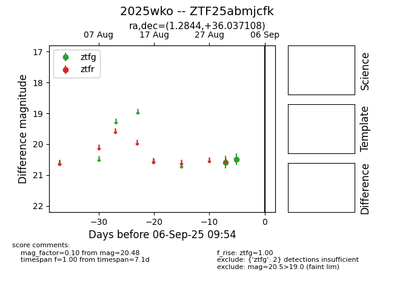

FINK: ZTF25abmjcfk
Lasair: ZTF25abmjcfk
ALeRCE: ZTF25abmjcfk
TNS: 2025wko
YSE: 2025wko
ZTF25abmjcfk (ztf,fink)
2025wko (tns,yse)
equatorial (ra, dec) = (1.2844,+36.03711)
galactic (l, b) = (112.5406,-25.89865)

last ztfg=20.48
2 ztfg detections